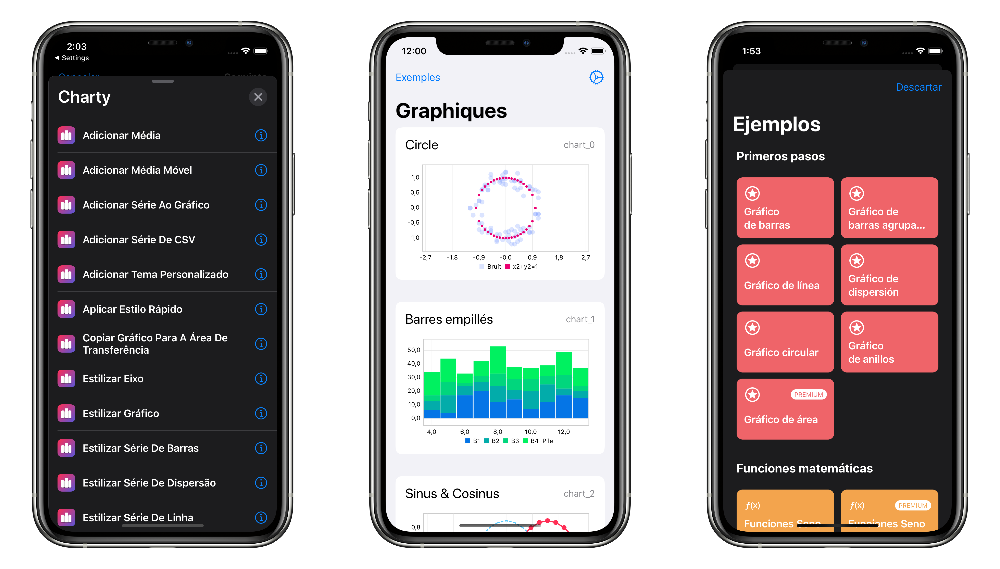
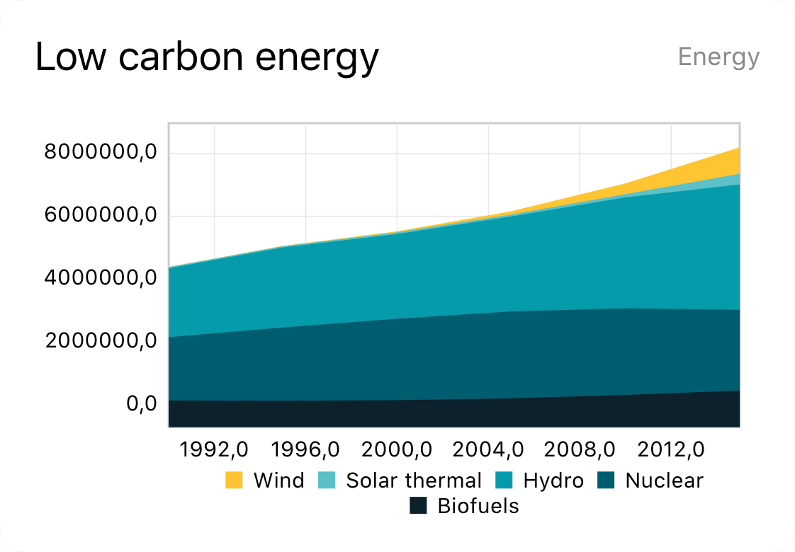
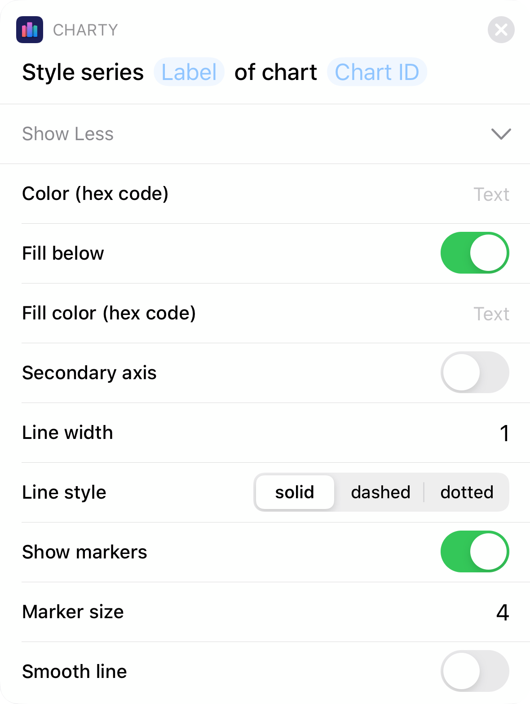
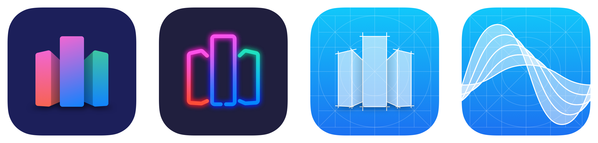

Charty's second major update has been released today: 1.2 – Hermes.
New languages
Charty has been entirely reengineered to make localization possible. And now, it's available in 3 new languages: portuguese, french and spanish!
Everything was translated, from the app's user interface to each shortcut action, including all of Charty's examples (down to variable names).

Fill that gap!

1.2 brings Charty's first new chart: area charts! Now, all of your line charts can be set to fill the area between the line and the x axis.
Area charts are great to show the overall trend of a dataset, while also showing the evolving relationship of its inner series. This chart is a good example showing how low carbon energy sources have been on the rise since the 90s, while also showing Wind, Solar and Hydro growing in importance, and Nuclear decreasing its share.
You can accomplish this either through the app interface using the new fill color parameter, or using the updated Style Line Series action, with the new Fill below and Fill color parameters.

New icons

Due to popular demand, Charty has earned two icons using Shortcuts' color scheme. There's also two other ones following the style of the Launched podcast by Charlie Chapman.
With 1.2, Charty now has 31 extra icons, with 4 more that can be unlocked on the Scavenger Hunt.
Squashed bug!
With Charty 1.2, the app doesn't need to be open in the background for the Copy Chart To Clipboard action to work!
The codename
Charty 1.2 is codenamed Hermes!
According to the Ancient History Encyclopedia, one of Hermes' domains was language, as he was known as the emissary of the gods. This is entirely aligned with Charty 1.2 main feature: localization!
After this, I'm now oficially starting work on iOS 14 new features! As always, stay tuned for updates on Twitter!